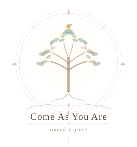

Come As
You Are
You do not have to have the right words today.
Start where you are.
"Come to me, all who are weary and burdened,Matthew 11:28
and I will give you rest."
This is not a space
that asks you to be okay.
Whether you arrived carrying something heavy, or simply wandered in looking for a quiet moment, you are welcome here. Exactly as you are. No performance required, no spiritual credentials needed. This is a place to breathe, to be honest, and to be met.
Choose your path
Carry
Begin by naming what feels true today. Move gently into reflection, or bring what is on your heart into prayer without needing to have it all figured out first.
Receive
When you need something to hold onto, this path offers comfort back to you through encouragement, daily bread, and scripture chosen for what your soul may need.
Rest
Stay a while. Write freely, breathe slowly, or light a candle for what matters. This part of the sanctuary is for stillness, release, and being gently held.
"He heals the brokenhearted and binds up their wounds."Psalm 147:3
If you would like to know the heart behind this place, you can visit About.